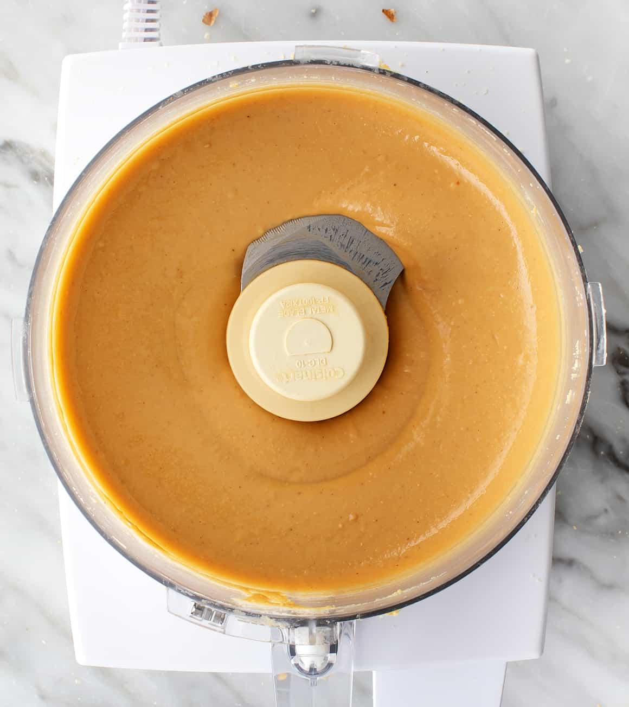

Homemade Peanut Butter

Description
Homemade peanut butter from loveandlemons.com without any of those preservatives they put in the peanut butter you buy at the store.
Perfect for any recipes requiring peanut butter!
Ingredients
- 3 cups dry roasted & salted or unsalted peanuts
- Sea salt, to taste (if using unsalted peanuts)
Steps
- Place the peanuts in a medium food processor. Process until very smooth, stopping every 30 seconds to 1 minute to scape down the sides of the bowl, as necessary, and to give the food processor's motor a break. The mixture will be chunky at first. Then, it'll thicken into a ball, and finally, it will become creamy and smooth. The whole process should take about 8 to 10 minutes.
- That's it!
back to home